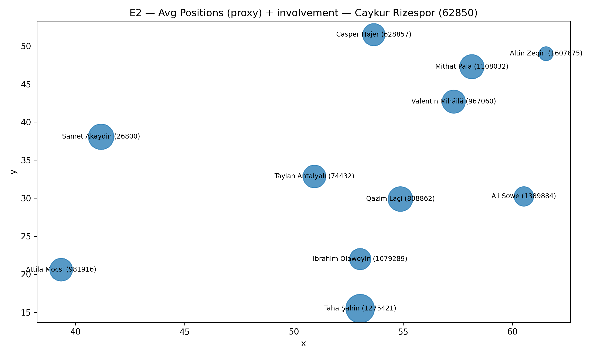
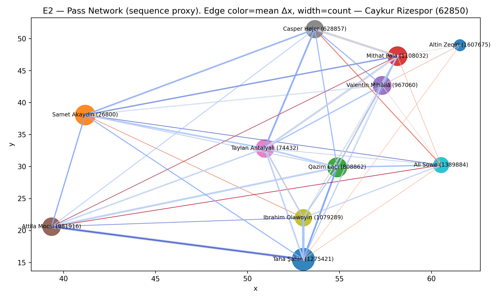
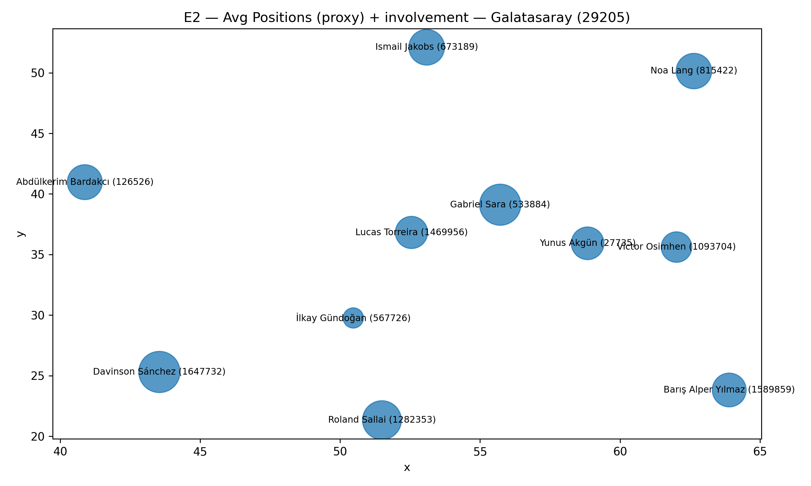
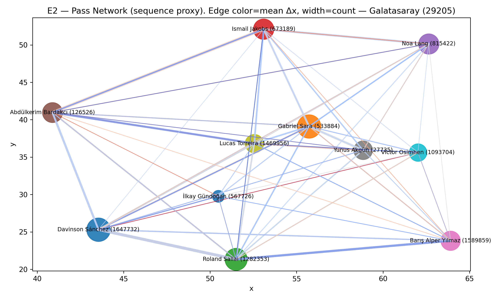
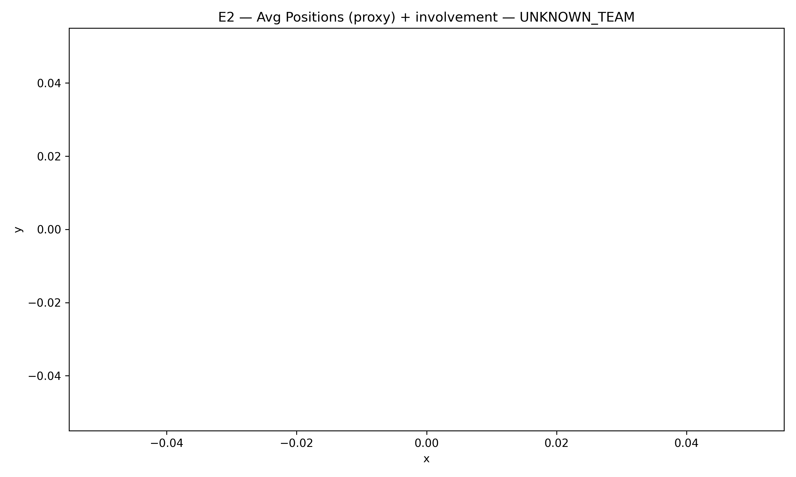

HPFA passnet_v1 — E2 sequence proxy
Evidence:
E2. Receiver inferred from next same-team PASS_OK within 8s. Not ground-truth tracking.
Avg positions + involvement — Caykur Rizespor (62850)

Pass network (Δx color, count width) — Caykur Rizespor (62850)

Avg positions + involvement — Galatasaray (29205)

Pass network (Δx color, count width) — Galatasaray (29205)

Avg positions + involvement — UNKNOWN_TEAM
